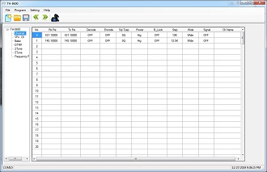
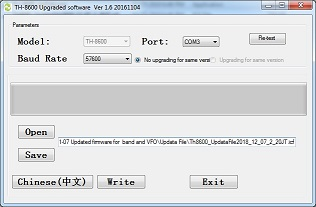
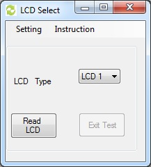
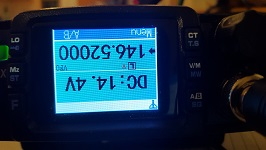
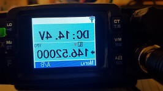
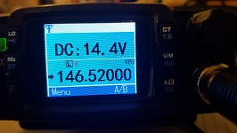

There doesn't seem to be a good place for documentation, tips and hints for the TYT TH-8600 amateur radio. This page is my attempt to put together all the information about this radio.
Apparently TYT locks new radios sold in the USA to 150-160MHz VHF and 450-460MHz UHF. In order to use them for the amatuer radio services the transceiver needs to be unlocked. My unit was used and already setup for the ham bands so I haven't verified the unlocking procedure myself.
To unlock make sure that the TH-8600 is turned off. Hold the "LO" (top left) button and the "A/B" (bottom right) button while turning the TH-8600 on.
The TYT provides several downloads for the TH-8600 at http://www.tyt888.com/?mod=download, however there isn't much description to what these downloads are. Here's my take on these files. The date is the date and title match that on the download page.
Contains the "TH-8600_20171206 .exe" which is the "V1.5" version of the programming software. The installation program needs to run as administrator. [Yes, that's not good practice]. After install, the local user can be granted write access to the installation directory of the programming software. This allows regular users to use the software and makes things a little less bad.
Installing the programming software also places the Prolific USB driver installed in that directory. I did not thest this driver since I already had a Prolific USB driver installed.
The download also contains the "Th8600_UpdataFile2018_12_07_2_20JT.icf" firmware and the installer program "TH-8600_UpData.exe" in the "Update File" directory. I'm not sure what updates this firmware contains and I haven't had the guts to install it yet. If you have more info please let me know.
Readable "instruction.doc" describing the firmware installation procedure: download
Local mirror: download
This is a little utility to determine and set the LCD display type. Apparently there are three different types of LCDs.
To use this utility choose the COM port in "Settings" -> "ComPort Select". Then click the "Read LCD" button. At this point the message "TETS MOD" is displayed on the LCD of the TH-8600. The drop down list will have the LCD type listed that is currently being used. Select other LCD types via the drop down list as desired. Click the "Exit Test" button to finalize the selection and close the connection.
  My tranceiver uses the "LCD 3". "LCD 1" is upside down and "LCD 2" is mirrored for me. I guess this feature allows for some interesting customizations or projects with the radio.
Local mirror: download
Contains the "TH-8600_Test .exe" which is the older version "V1.2" of the programming software. There exists also a "USB Driver" folder that appears to have drivers for Windows 98ME, XP, Vista, and 7.
Local mirror: download
Contains the "TH-8600 .exe" which is the older version "V1.1" of the programming software.
Local mirror: download
Just the pamphlet for the radio.
Local mirror: download
Channel
You can use the channel name to give the programmed channel a meaning full name that is dis
TX (transmission) power "High", "MID", "Low"
"Allow" includes the channel in the scan. "Skip" skips the channel when scanning.
Inhibit transmissions (i.e. receive only on this channel).
Basic
"Frequency" displays the channel name if one is specified, otherwise the frequency is displayed. "Chanel" displays the channel number. "Name" displays the channel name if one is specified, otherwise the memory number is displayed. Note that the channel number and memory number are identical.
My choice is: Frequency
The A VFO is displayed on top and the B VFO is displayed on the bottom of the screen. (Use the A/B switch to change the active VFO, which is indicated by an error on the left side. The "OFF setting does not display the inactive VFO. The "Voltage" settings displays the power voltage in the space of the inactive VFO. The "Frequency" setting displays the channel name if one is specified, otherwise the frequency of the inactive VFO.
NOTE: The radio only monitors the active and inactive channels (also known as dual watch) when this setting is set to "Frequency". Otherwise only the active channel is monitored
My choice is: Frequency
Squelch level. The "OFF" setting turns the squelch off. I didn't noticed much difference between the other squelch settings.
My choice is: 1
TBST is used to activate some dormat repeaters. 1000Hz, 1450Hz, 1750Hz or 2100Hz can be specified. Press the PTT and volume-down key on the mic to transmit the tone burst.
???
My choice is: OFF
???
My choice is: Main CH
Specify if the LCD backlight should turn off after 5 or 10 seconds. The "On" setting keeps the LCD backlight on whenever the radio is turned on.
My choice is: ON
Menu language. This setting can't be changed via the programming software.
"TO" (Time Operation) Scan stops when signal detected. Scan resumes after after predetermined time ("Resume Time"). "CO" (Carrier Operation) Scan stops when signal detected. Scan resumes when signal disappears. "SE" (Search Operation) Scan stops when signal detected. Scanning will not resume.
My choice is: Se
Only used with scan type "TO". This sets the time when scan resumes.
Squelch Tail Elimination
My choise is: OFF
Automatically power radio off if no operation has occured for the specified period of 30, 60, or 120 minutes. The "OFF" setting turns this feature off, causing the radio never to turn off automatically. On my radio I measured a usage of 0.25A when the radio is on (receive) and 0.01A when the radio is off.
My choice is: 1 Hour
Time-out Timer setting is used to stop transmission after the specified minutes. This is done to stop transmission in case the PTT button is pushed by accident. 1 to 30 minutes can be specified. The "OFF" setting turns this feature off, allowing transmission to go indefinitely.
My choice is: 5
Turn on/off the beeps when buttons are pushed or knobs are turned.
My choice is: OFF
Initial volume level after programming. The last volume level will be used for any other time the radio is powered up.
When checked the radio requires a one to six digit pin on powered up. This feature keeps non authorized users from using the radio. Use the "Code" field to specify the pin. Note that a blank code field has the same effect as unchecking this option.
My choice is: not checked
Programm the softkeys besides the screen. Valid option for each key are:
Disable the menu on the radio (i.e. can't change settings on the radio).
My choice is: Not checked
When no CTCSS or DCS is set the radio transmitts a tail elimination tone. This causes compatible radios to mute when they receive. This option is disabled when "tail_elim" is set to off.
When checked the operator can't perform a factory/settings reset on the radio.
My choice is: Checked
What is displayed when the radio is turned on. "OFF" nothing special is displayed. "Char String" provides two text lines that allows some text to displayed. "Picture" shows logo. I haven't found a way to upload a custom picture.


{kind=link}
{kind=link}
{kind=link}